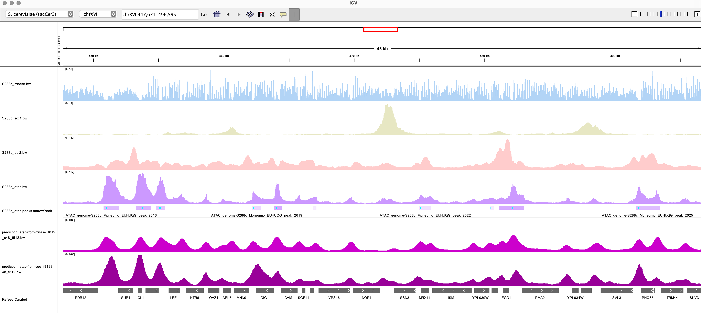

Predict genomic coverage from DNA sequence¶
In the previous tutorial, we trained a multi-omics neural network model to predict ATAC signal coverage from MNase signal coverage. Here, we will leverage the multi-modal facet of momics to predict genomic coverage from DNA sequence. This is useful for predicting the behavior of synthetic DNA sequences, or to fill in missing data in a under-sequenced dataset.
Connect to the data repository¶
Here again, we will tap into the repository generated in the previous tutorial.
[ ]:
from momics.momics import Momics
## Creating repository
repo = Momics("yeast_CNN_data.momics")
## Check that sequence and some tracks are registered
repo.seq()
repo.tracks()
momics :: INFO :: 2025-06-25 09:43:30,260 :: No cloud config found for momics.Consider populating `~/.momics.ini` file with configuration settings for cloud access.
| idx | label | path | |
|---|---|---|---|
| 0 | 0 | atac | /home/jaseriza/repos/momics/data/S288c_atac.bw |
| 1 | 1 | scc1 | /home/jaseriza/repos/momics/data/S288c_scc1.bw |
| 2 | 2 | mnase | /home/jaseriza/repos/momics/data/S288c_mnase.bw |
| 3 | 3 | pol2 | /home/jaseriza/repos/momics/data/S288c_pol2.bw |
| 4 | 4 | atac_rescaled | tmpcoqnaya3 |
| 5 | 5 | scc1_rescaled | tmp3ecesx22 |
| 6 | 6 | mnase_rescaled | tmpde2rine8 |
| 7 | 7 | pol2_rescaled | tmpwrvmrp1u |
| 8 | 8 | predicted_atac_from_mnase | tmpwink6nhz |
Define datasets and model¶
We will define a simple convolutional neural network with tensorflow to predict the target variable atac_rescaled from the feature variable nucleotide (the genome reference sequence). This requires to first define a set of genomic coordinates to extract genomic data from. We will extract sequences over tiling genomic windows (features_size of 8193, with a stride of 48) as feature variables to predict atac_rescaled coverage scores over the same tiling genomic windows,
but narrowed down to the a target_size of 512 bp around the center of the window. We can split the data into training, testing and validation sets, using momics.utils.split_ranges().
[2]:
import momics.utils as mutils
from momics.dataset import MomicsDataset
from momics import nn
import tensorflow as tf # type: ignore
from tensorflow.keras import layers # type: ignore
# Fetch data from the momics repository
features = "nucleotide"
target = "atac_rescaled"
features_size = 16384 + 1
stride = 48
target_size = 512
batch_size = 500
bins = repo.bins(width=features_size, stride=stride, cut_last_bin_out=True)
bins = bins.subset(lambda x: x.Chromosome != "XVI")
bins_split, bins_test = mutils.split_ranges(bins, 0.8, shuffle=False)
bins_train, bins_val = mutils.split_ranges(bins_split, 0.8, shuffle=False)
train_dataset = (
MomicsDataset(repo, bins_train, features, target, target_size=target_size, batch_size=batch_size).prefetch(20).repeat()
)
val_dataset = MomicsDataset(repo, bins_val, features, target, target_size=target_size, batch_size=batch_size)
test_dataset = MomicsDataset(repo, bins_test, features, target, target_size=target_size, batch_size=batch_size)
# Define the model
model = nn.ChromNN(
inputs={"nucleotide": layers.Input(shape=(features_size, 5), name="nucleotide")},
outputs={"atac_rescaled": layers.Dense(target_size, activation="linear", name="atac_rescaled")},
filters=[64, 16, 8],
kernel_sizes=[3, 8, 80],
).model
## Use a combination of MAE and correlation as loss function
def loss_atac(y_true, y_pred):
return nn.mae_cor(y_true, y_pred, alpha=0.9)
## Use Adam optimizer, a learning rate of 0.001, and return MAE as metric
model.compile(
optimizer=tf.keras.optimizers.Adam(learning_rate=0.001),
loss={
"atac_rescaled": loss_atac,
},
loss_weights={
"atac_rescaled": 1.0,
},
metrics={
"atac_rescaled": "mae",
},
)
model.summary()
2025-06-25 09:43:35.415815: I tensorflow/core/util/port.cc:153] oneDNN custom operations are on. You may see slightly different numerical results due to floating-point round-off errors from different computation orders. To turn them off, set the environment variable `TF_ENABLE_ONEDNN_OPTS=0`.
2025-06-25 09:43:35.425883: E external/local_xla/xla/stream_executor/cuda/cuda_fft.cc:477] Unable to register cuFFT factory: Attempting to register factory for plugin cuFFT when one has already been registered
WARNING: All log messages before absl::InitializeLog() is called are written to STDERR
E0000 00:00:1750837415.437392 8110 cuda_dnn.cc:8310] Unable to register cuDNN factory: Attempting to register factory for plugin cuDNN when one has already been registered
E0000 00:00:1750837415.440578 8110 cuda_blas.cc:1418] Unable to register cuBLAS factory: Attempting to register factory for plugin cuBLAS when one has already been registered
2025-06-25 09:43:35.452721: I tensorflow/core/platform/cpu_feature_guard.cc:210] This TensorFlow binary is optimized to use available CPU instructions in performance-critical operations.
To enable the following instructions: AVX2 AVX512F AVX512_VNNI AVX512_BF16 AVX512_FP16 AVX_VNNI AMX_TILE AMX_INT8 AMX_BF16 FMA, in other operations, rebuild TensorFlow with the appropriate compiler flags.
I0000 00:00:1750837417.123235 8110 gpu_device.cc:2022] Created device /job:localhost/replica:0/task:0/device:GPU:0 with 10088 MB memory: -> device: 0, name: NVIDIA RTX A2000 12GB, pci bus id: 0000:55:00.0, compute capability: 8.6
Model: "functional"
┏━━━━━━━━━━━━━━━━━━━━━━━━━━━━━━━━━┳━━━━━━━━━━━━━━━━━━━━━━━━┳━━━━━━━━━━━━━━━┓ ┃ Layer (type) ┃ Output Shape ┃ Param # ┃ ┡━━━━━━━━━━━━━━━━━━━━━━━━━━━━━━━━━╇━━━━━━━━━━━━━━━━━━━━━━━━╇━━━━━━━━━━━━━━━┩ │ nucleotide (InputLayer) │ (None, 16385, 5) │ 0 │ ├─────────────────────────────────┼────────────────────────┼───────────────┤ │ conv1d (Conv1D) │ (None, 16385, 64) │ 1,024 │ ├─────────────────────────────────┼────────────────────────┼───────────────┤ │ max_pooling1d (MaxPooling1D) │ (None, 8193, 64) │ 0 │ ├─────────────────────────────────┼────────────────────────┼───────────────┤ │ batch_normalization │ (None, 8193, 64) │ 256 │ │ (BatchNormalization) │ │ │ ├─────────────────────────────────┼────────────────────────┼───────────────┤ │ dropout (Dropout) │ (None, 8193, 64) │ 0 │ ├─────────────────────────────────┼────────────────────────┼───────────────┤ │ conv1d_1 (Conv1D) │ (None, 8193, 16) │ 8,208 │ ├─────────────────────────────────┼────────────────────────┼───────────────┤ │ max_pooling1d_1 (MaxPooling1D) │ (None, 4097, 16) │ 0 │ ├─────────────────────────────────┼────────────────────────┼───────────────┤ │ batch_normalization_1 │ (None, 4097, 16) │ 64 │ │ (BatchNormalization) │ │ │ ├─────────────────────────────────┼────────────────────────┼───────────────┤ │ dropout_1 (Dropout) │ (None, 4097, 16) │ 0 │ ├─────────────────────────────────┼────────────────────────┼───────────────┤ │ conv1d_2 (Conv1D) │ (None, 4097, 8) │ 10,248 │ ├─────────────────────────────────┼────────────────────────┼───────────────┤ │ max_pooling1d_2 (MaxPooling1D) │ (None, 2049, 8) │ 0 │ ├─────────────────────────────────┼────────────────────────┼───────────────┤ │ batch_normalization_2 │ (None, 2049, 8) │ 32 │ │ (BatchNormalization) │ │ │ ├─────────────────────────────────┼────────────────────────┼───────────────┤ │ flatten (Flatten) │ (None, 16392) │ 0 │ ├─────────────────────────────────┼────────────────────────┼───────────────┤ │ atac_rescaled (Dense) │ (None, 512) │ 8,393,216 │ └─────────────────────────────────┴────────────────────────┴───────────────┘
Total params: 8,413,048 (32.09 MB)
Trainable params: 8,412,872 (32.09 MB)
Non-trainable params: 176 (704.00 B)
Fit the model¶
Now that we have the datasets and the model, we can fit the model to the training data, using the fit() method of the model. We can also evaluate the model on the testing and validation datasets.
[3]:
import numpy as np
from pathlib import Path
from tensorflow.keras.callbacks import CSVLogger, EarlyStopping, ModelCheckpoint, ReduceLROnPlateau # type: ignore
callbacks_list = [
CSVLogger(Path(".chromnn", "seq2cov.epoch_data.csv")),
ModelCheckpoint(filepath=Path(".chromnn", "Checkpoint.seq2cov.keras"), monitor="val_loss", save_best_only=True),
EarlyStopping(monitor="val_loss", patience=40, min_delta=1e-5, restore_best_weights=True),
ReduceLROnPlateau(monitor="val_loss", factor=0.1, patience=6 // 2, min_lr=0.1 * 0.001),
]
model.fit(
train_dataset,
validation_data=val_dataset,
epochs=30,
callbacks=callbacks_list,
steps_per_epoch=int(np.floor(len(bins_train) // batch_size)),
)
Epoch 1/30
WARNING: All log messages before absl::InitializeLog() is called are written to STDERR
I0000 00:00:1750837430.439602 8364 service.cc:148] XLA service 0x7656ec005fe0 initialized for platform CUDA (this does not guarantee that XLA will be used). Devices:
I0000 00:00:1750837430.439622 8364 service.cc:156] StreamExecutor device (0): NVIDIA RTX A2000 12GB, Compute Capability 8.6
2025-06-25 09:43:50.484396: I tensorflow/compiler/mlir/tensorflow/utils/dump_mlir_util.cc:268] disabling MLIR crash reproducer, set env var `MLIR_CRASH_REPRODUCER_DIRECTORY` to enable.
I0000 00:00:1750837431.124685 8364 cuda_dnn.cc:529] Loaded cuDNN version 90300
2025-06-25 09:44:06.207653: E external/local_xla/xla/service/slow_operation_alarm.cc:65] Trying algorithm eng48{k2=2,k6=2,k13=1,k14=0,k22=2} for conv (f32[5,64,1,3]{3,2,1,0}, u8[0]{0}) custom-call(f32[5,500,1,16385]{3,2,1,0}, f32[64,500,1,16385]{3,2,1,0}), window={size=1x16385 pad=0_0x1_1}, dim_labels=bf01_oi01->bf01, custom_call_target="__cudnn$convForward", backend_config={"cudnn_conv_backend_config":{"activation_mode":"kNone","conv_result_scale":1,"leakyrelu_alpha":0,"side_input_scale":0},"force_earliest_schedule":false,"operation_queue_id":"0","wait_on_operation_queues":[]} is taking a while...
2025-06-25 09:44:06.297560: E external/local_xla/xla/service/slow_operation_alarm.cc:133] The operation took 1.090010138s
Trying algorithm eng48{k2=2,k6=2,k13=1,k14=0,k22=2} for conv (f32[5,64,1,3]{3,2,1,0}, u8[0]{0}) custom-call(f32[5,500,1,16385]{3,2,1,0}, f32[64,500,1,16385]{3,2,1,0}), window={size=1x16385 pad=0_0x1_1}, dim_labels=bf01_oi01->bf01, custom_call_target="__cudnn$convForward", backend_config={"cudnn_conv_backend_config":{"activation_mode":"kNone","conv_result_scale":1,"leakyrelu_alpha":0,"side_input_scale":0},"force_earliest_schedule":false,"operation_queue_id":"0","wait_on_operation_queues":[]} is taking a while...
2025-06-25 09:44:08.906325: E external/local_xla/xla/service/slow_operation_alarm.cc:65] Trying algorithm eng28{k2=4,k3=0} for conv (f32[5,64,1,3]{3,2,1,0}, u8[0]{0}) custom-call(f32[5,500,1,16385]{3,2,1,0}, f32[64,500,1,16385]{3,2,1,0}), window={size=1x16385 pad=0_0x1_1}, dim_labels=bf01_oi01->bf01, custom_call_target="__cudnn$convForward", backend_config={"cudnn_conv_backend_config":{"activation_mode":"kNone","conv_result_scale":1,"leakyrelu_alpha":0,"side_input_scale":0},"force_earliest_schedule":false,"operation_queue_id":"0","wait_on_operation_queues":[]} is taking a while...
2025-06-25 09:44:09.526091: E external/local_xla/xla/service/slow_operation_alarm.cc:133] The operation took 1.619896251s
Trying algorithm eng28{k2=4,k3=0} for conv (f32[5,64,1,3]{3,2,1,0}, u8[0]{0}) custom-call(f32[5,500,1,16385]{3,2,1,0}, f32[64,500,1,16385]{3,2,1,0}), window={size=1x16385 pad=0_0x1_1}, dim_labels=bf01_oi01->bf01, custom_call_target="__cudnn$convForward", backend_config={"cudnn_conv_backend_config":{"activation_mode":"kNone","conv_result_scale":1,"leakyrelu_alpha":0,"side_input_scale":0},"force_earliest_schedule":false,"operation_queue_id":"0","wait_on_operation_queues":[]} is taking a while...
2025-06-25 09:44:10.526246: E external/local_xla/xla/service/slow_operation_alarm.cc:65] Trying algorithm eng1{k2=2,k3=0} for conv (f32[5,64,1,3]{3,2,1,0}, u8[0]{0}) custom-call(f32[5,500,1,16385]{3,2,1,0}, f32[64,500,1,16385]{3,2,1,0}), window={size=1x16385 pad=0_0x1_1}, dim_labels=bf01_oi01->bf01, custom_call_target="__cudnn$convForward", backend_config={"cudnn_conv_backend_config":{"activation_mode":"kNone","conv_result_scale":1,"leakyrelu_alpha":0,"side_input_scale":0},"force_earliest_schedule":false,"operation_queue_id":"0","wait_on_operation_queues":[]} is taking a while...
2025-06-25 09:44:12.727300: E external/local_xla/xla/service/slow_operation_alarm.cc:133] The operation took 3.201154425s
Trying algorithm eng1{k2=2,k3=0} for conv (f32[5,64,1,3]{3,2,1,0}, u8[0]{0}) custom-call(f32[5,500,1,16385]{3,2,1,0}, f32[64,500,1,16385]{3,2,1,0}), window={size=1x16385 pad=0_0x1_1}, dim_labels=bf01_oi01->bf01, custom_call_target="__cudnn$convForward", backend_config={"cudnn_conv_backend_config":{"activation_mode":"kNone","conv_result_scale":1,"leakyrelu_alpha":0,"side_input_scale":0},"force_earliest_schedule":false,"operation_queue_id":"0","wait_on_operation_queues":[]} is taking a while...
I0000 00:00:1750837460.089925 8364 device_compiler.h:188] Compiled cluster using XLA! This line is logged at most once for the lifetime of the process.
291/291 ━━━━━━━━━━━━━━━━━━━━ 304s 938ms/step - loss: 0.6603 - mae: 0.6242 - val_loss: 0.3262 - val_mae: 0.2572 - learning_rate: 0.0010
Epoch 2/30
2025-06-25 09:49:08.796210: E external/local_xla/xla/service/slow_operation_alarm.cc:65] Trying algorithm eng28{k2=4,k3=0} for conv (f32[5,64,1,3]{3,2,1,0}, u8[0]{0}) custom-call(f32[5,461,1,16385]{3,2,1,0}, f32[64,461,1,16385]{3,2,1,0}), window={size=1x16385 pad=0_0x1_1}, dim_labels=bf01_oi01->bf01, custom_call_target="__cudnn$convForward", backend_config={"cudnn_conv_backend_config":{"activation_mode":"kNone","conv_result_scale":1,"leakyrelu_alpha":0,"side_input_scale":0},"force_earliest_schedule":false,"operation_queue_id":"0","wait_on_operation_queues":[]} is taking a while...
2025-06-25 09:49:09.313322: E external/local_xla/xla/service/slow_operation_alarm.cc:133] The operation took 1.517221908s
Trying algorithm eng28{k2=4,k3=0} for conv (f32[5,64,1,3]{3,2,1,0}, u8[0]{0}) custom-call(f32[5,461,1,16385]{3,2,1,0}, f32[64,461,1,16385]{3,2,1,0}), window={size=1x16385 pad=0_0x1_1}, dim_labels=bf01_oi01->bf01, custom_call_target="__cudnn$convForward", backend_config={"cudnn_conv_backend_config":{"activation_mode":"kNone","conv_result_scale":1,"leakyrelu_alpha":0,"side_input_scale":0},"force_earliest_schedule":false,"operation_queue_id":"0","wait_on_operation_queues":[]} is taking a while...
2025-06-25 09:49:10.313509: E external/local_xla/xla/service/slow_operation_alarm.cc:65] Trying algorithm eng1{k2=2,k3=0} for conv (f32[5,64,1,3]{3,2,1,0}, u8[0]{0}) custom-call(f32[5,461,1,16385]{3,2,1,0}, f32[64,461,1,16385]{3,2,1,0}), window={size=1x16385 pad=0_0x1_1}, dim_labels=bf01_oi01->bf01, custom_call_target="__cudnn$convForward", backend_config={"cudnn_conv_backend_config":{"activation_mode":"kNone","conv_result_scale":1,"leakyrelu_alpha":0,"side_input_scale":0},"force_earliest_schedule":false,"operation_queue_id":"0","wait_on_operation_queues":[]} is taking a while...
2025-06-25 09:49:12.330077: E external/local_xla/xla/service/slow_operation_alarm.cc:133] The operation took 3.01668914s
Trying algorithm eng1{k2=2,k3=0} for conv (f32[5,64,1,3]{3,2,1,0}, u8[0]{0}) custom-call(f32[5,461,1,16385]{3,2,1,0}, f32[64,461,1,16385]{3,2,1,0}), window={size=1x16385 pad=0_0x1_1}, dim_labels=bf01_oi01->bf01, custom_call_target="__cudnn$convForward", backend_config={"cudnn_conv_backend_config":{"activation_mode":"kNone","conv_result_scale":1,"leakyrelu_alpha":0,"side_input_scale":0},"force_earliest_schedule":false,"operation_queue_id":"0","wait_on_operation_queues":[]} is taking a while...
291/291 ━━━━━━━━━━━━━━━━━━━━ 294s 925ms/step - loss: 0.3208 - mae: 0.2537 - val_loss: 0.3202 - val_mae: 0.2562 - learning_rate: 0.0010
Epoch 3/30
291/291 ━━━━━━━━━━━━━━━━━━━━ 267s 918ms/step - loss: 0.2566 - mae: 0.1885 - val_loss: 0.2475 - val_mae: 0.1818 - learning_rate: 0.0010
Epoch 4/30
291/291 ━━━━━━━━━━━━━━━━━━━━ 273s 939ms/step - loss: 0.2059 - mae: 0.1388 - val_loss: 0.2078 - val_mae: 0.1451 - learning_rate: 0.0010
Epoch 5/30
291/291 ━━━━━━━━━━━━━━━━━━━━ 276s 949ms/step - loss: 0.1637 - mae: 0.1019 - val_loss: 0.1601 - val_mae: 0.1014 - learning_rate: 0.0010
Epoch 6/30
291/291 ━━━━━━━━━━━━━━━━━━━━ 278s 958ms/step - loss: 0.1366 - mae: 0.0824 - val_loss: 0.1304 - val_mae: 0.0743 - learning_rate: 0.0010
Epoch 7/30
291/291 ━━━━━━━━━━━━━━━━━━━━ 262s 902ms/step - loss: 0.1317 - mae: 0.0795 - val_loss: 0.1271 - val_mae: 0.0720 - learning_rate: 0.0010
Epoch 8/30
291/291 ━━━━━━━━━━━━━━━━━━━━ 259s 892ms/step - loss: 0.1291 - mae: 0.0787 - val_loss: 0.1269 - val_mae: 0.0718 - learning_rate: 0.0010
Epoch 9/30
291/291 ━━━━━━━━━━━━━━━━━━━━ 258s 889ms/step - loss: 0.1270 - mae: 0.0779 - val_loss: 0.1249 - val_mae: 0.0709 - learning_rate: 0.0010
Epoch 10/30
291/291 ━━━━━━━━━━━━━━━━━━━━ 259s 892ms/step - loss: 0.1255 - mae: 0.0777 - val_loss: 0.1246 - val_mae: 0.0710 - learning_rate: 0.0010
Epoch 11/30
291/291 ━━━━━━━━━━━━━━━━━━━━ 258s 889ms/step - loss: 0.1238 - mae: 0.0770 - val_loss: 0.1247 - val_mae: 0.0714 - learning_rate: 0.0010
Epoch 12/30
291/291 ━━━━━━━━━━━━━━━━━━━━ 260s 896ms/step - loss: 0.1217 - mae: 0.0759 - val_loss: 0.1246 - val_mae: 0.0713 - learning_rate: 0.0010
Epoch 13/30
291/291 ━━━━━━━━━━━━━━━━━━━━ 258s 888ms/step - loss: 0.1209 - mae: 0.0762 - val_loss: 0.1259 - val_mae: 0.0728 - learning_rate: 0.0010
Epoch 14/30
291/291 ━━━━━━━━━━━━━━━━━━━━ 262s 902ms/step - loss: 0.1166 - mae: 0.0738 - val_loss: 0.1215 - val_mae: 0.0690 - learning_rate: 1.0000e-04
Epoch 15/30
291/291 ━━━━━━━━━━━━━━━━━━━━ 260s 893ms/step - loss: 0.1136 - mae: 0.0720 - val_loss: 0.1212 - val_mae: 0.0688 - learning_rate: 1.0000e-04
Epoch 16/30
291/291 ━━━━━━━━━━━━━━━━━━━━ 261s 897ms/step - loss: 0.1119 - mae: 0.0709 - val_loss: 0.1213 - val_mae: 0.0690 - learning_rate: 1.0000e-04
Epoch 17/30
291/291 ━━━━━━━━━━━━━━━━━━━━ 260s 894ms/step - loss: 0.1116 - mae: 0.0711 - val_loss: 0.1213 - val_mae: 0.0690 - learning_rate: 1.0000e-04
Epoch 18/30
291/291 ━━━━━━━━━━━━━━━━━━━━ 259s 892ms/step - loss: 0.1107 - mae: 0.0706 - val_loss: 0.1215 - val_mae: 0.0690 - learning_rate: 1.0000e-04
Epoch 19/30
291/291 ━━━━━━━━━━━━━━━━━━━━ 259s 891ms/step - loss: 0.1101 - mae: 0.0700 - val_loss: 0.1213 - val_mae: 0.0689 - learning_rate: 1.0000e-04
Epoch 20/30
291/291 ━━━━━━━━━━━━━━━━━━━━ 259s 891ms/step - loss: 0.1102 - mae: 0.0704 - val_loss: 0.1216 - val_mae: 0.0691 - learning_rate: 1.0000e-04
Epoch 21/30
291/291 ━━━━━━━━━━━━━━━━━━━━ 259s 893ms/step - loss: 0.1101 - mae: 0.0703 - val_loss: 0.1216 - val_mae: 0.0691 - learning_rate: 1.0000e-04
Epoch 22/30
291/291 ━━━━━━━━━━━━━━━━━━━━ 259s 892ms/step - loss: 0.1094 - mae: 0.0698 - val_loss: 0.1217 - val_mae: 0.0692 - learning_rate: 1.0000e-04
Epoch 23/30
291/291 ━━━━━━━━━━━━━━━━━━━━ 260s 895ms/step - loss: 0.1094 - mae: 0.0697 - val_loss: 0.1217 - val_mae: 0.0693 - learning_rate: 1.0000e-04
Epoch 24/30
291/291 ━━━━━━━━━━━━━━━━━━━━ 262s 901ms/step - loss: 0.1091 - mae: 0.0693 - val_loss: 0.1218 - val_mae: 0.0693 - learning_rate: 1.0000e-04
Epoch 25/30
291/291 ━━━━━━━━━━━━━━━━━━━━ 260s 896ms/step - loss: 0.1082 - mae: 0.0686 - val_loss: 0.1219 - val_mae: 0.0694 - learning_rate: 1.0000e-04
Epoch 26/30
291/291 ━━━━━━━━━━━━━━━━━━━━ 261s 898ms/step - loss: 0.1079 - mae: 0.0686 - val_loss: 0.1222 - val_mae: 0.0694 - learning_rate: 1.0000e-04
Epoch 27/30
291/291 ━━━━━━━━━━━━━━━━━━━━ 262s 903ms/step - loss: 0.1078 - mae: 0.0690 - val_loss: 0.1221 - val_mae: 0.0694 - learning_rate: 1.0000e-04
Epoch 28/30
291/291 ━━━━━━━━━━━━━━━━━━━━ 264s 909ms/step - loss: 0.1086 - mae: 0.0702 - val_loss: 0.1222 - val_mae: 0.0694 - learning_rate: 1.0000e-04
Epoch 29/30
291/291 ━━━━━━━━━━━━━━━━━━━━ 264s 908ms/step - loss: 0.1075 - mae: 0.0693 - val_loss: 0.1221 - val_mae: 0.0692 - learning_rate: 1.0000e-04
Epoch 30/30
291/291 ━━━━━━━━━━━━━━━━━━━━ 259s 892ms/step - loss: 0.1072 - mae: 0.0691 - val_loss: 0.1220 - val_mae: 0.0692 - learning_rate: 1.0000e-04
[3]:
<keras.src.callbacks.history.History at 0x76591af707c0>
Evaluate and save model¶
Now let’s see how the trained model performs, and save it to the local repository.
[4]:
# Evaluate the model
model.evaluate(test_dataset)
model.save("chromnn_seq-to-atac.keras")
92/92 ━━━━━━━━━━━━━━━━━━━━ 65s 703ms/step - loss: 0.1185 - mae: 0.0696
Use the model to predict ATAC-seq coverage¶
We can now use our trained model to predict ATAC-seq coverage from DNA sequence, for example on a chromosome which has not been used for training.
[6]:
from momics import dataset as mmd
from momics import aggregate as mma
## Now predict the ATAC signal from genome sequence
bb = repo.bins(width=features_size, stride=8, cut_last_bin_out=True)["XVI"]
ds = mmd.MomicsDataset(repo, bb, "nucleotide", batch_size=500).prefetch(10)
predictions = model.predict(ds)
## Export predictions as a bigwig
centered_bb = bb.copy()
centered_bb.Start = centered_bb.Start + features_size // 2 - target_size // 2
centered_bb.End = centered_bb.Start + target_size
chrom_sizes = repo.chroms(as_dict=True)
keys = [f"{chrom}:{start}-{end}" for chrom, start, end in zip(centered_bb.Chromosome, centered_bb.Start, centered_bb.End)]
res = {f"atac-from-seq_f{features_size}_s{stride}_t{target_size}": {k: None for k in keys}}
for i, key in enumerate(keys):
res[f"atac-from-seq_f{features_size}_s{stride}_t{target_size}"][key] = predictions["atac_rescaled"][i]
cov = mma.aggregate(res, centered_bb, chrom_sizes, type="mean", prefix="prediction")
print(cov[f"atac-from-seq_f{features_size}_s{stride}_t{target_size}"])
repo.ingest_track(cov[f"atac-from-seq_f{features_size}_s{stride}_t{target_size}"], "predicted_atac_from_seq")
233/233 ━━━━━━━━━━━━━━━━━━━━ 161s 691ms/step
momics :: INFO :: 2025-06-25 18:18:10,620 :: Saved coverage for atac-from-seq_f16385_s48_t512 to prediction_atac-from-seq_f16385_s48_t512.bw
{'I': array([0., 0., 0., ..., 0., 0., 0.]), 'II': array([0., 0., 0., ..., 0., 0., 0.]), 'III': array([0., 0., 0., ..., 0., 0., 0.]), 'IV': array([0., 0., 0., ..., 0., 0., 0.]), 'V': array([0., 0., 0., ..., 0., 0., 0.]), 'VI': array([0., 0., 0., ..., 0., 0., 0.]), 'VII': array([0., 0., 0., ..., 0., 0., 0.]), 'VIII': array([0., 0., 0., ..., 0., 0., 0.]), 'IX': array([0., 0., 0., ..., 0., 0., 0.]), 'X': array([0., 0., 0., ..., 0., 0., 0.]), 'XI': array([0., 0., 0., ..., 0., 0., 0.]), 'XII': array([0., 0., 0., ..., 0., 0., 0.]), 'XIII': array([0., 0., 0., ..., 0., 0., 0.]), 'XIV': array([0., 0., 0., ..., 0., 0., 0.]), 'XV': array([0., 0., 0., ..., 0., 0., 0.]), 'XVI': array([0., 0., 0., ..., 0., 0., 0.]), 'Mito': array([0., 0., 0., ..., 0., 0., 0.])}
momics :: INFO :: 2025-06-25 18:18:15,158 :: 1 tracks ingested in 2.8438s.
[6]:
<momics.momics.Momics at 0x7659dab6c7c0>
This also generates a new bw file with ATAC-seq coverage over chr16, predicted from genomic sequence. Here again, we can visualize the predicted ATAC-seq coverage over chr16 in the IGV genome browser.
In the following screenshot, 4 experimental tracks are first shown (MNase, Scc1 ChIP-seq, Pol. II ChIP-seq, and ATAC-seq and its annotated peaks), followed by the ATAC-seq coverage predicted from MNase-seq coverage (magenta) or from genomic sequnece (purple). One can appreciate that predictions based on genomic sequence have a better dynamic range than those based on MNase-seq coverage, with peak heights in better agreement with the experimental data.
